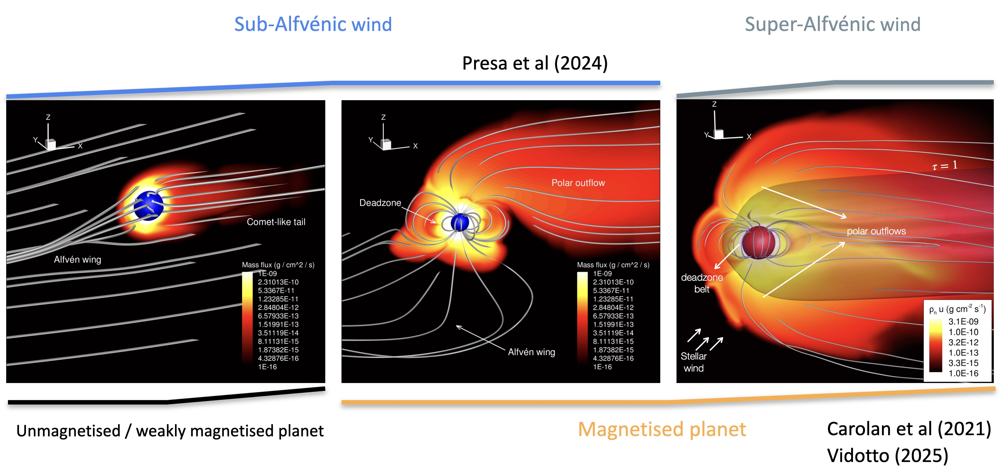

Welcome to the public webpage of the ASTROFLOW project!
ASTROFLOW is an Astrophysics research project, whose principal investigator is Prof. Aline Vidotto. Funded by the European Commission from September 2019 until August 2025, through an ERC Consolidator grant, the main goal of ASTROFLOW was to understand exoplanetary mass loss, by quantifying the influence of stellar outflows and irradiation on atmospheric escape of close-in exoplanets orbiting low-mass stars. Read more below.
Scientific summary and key achievements
Escape plays a key role in planetary evolution, population, and potential to develop life. Stellar irradiation and outflow affect planetary mass loss: irradiation heats planetary atmospheres, which inflate and more likely escape; outflow causes pressure confinement around otherwise freely escaping atmospheres. This external pressure can increase, reduce or even suppress escape rates; its effects on exoplanetary mass loss has remain largely unexplored due to the complexity of such interactions.
ASTROFLOW has filled this knowledge gap by developing a novel modelling framework of atmospheric escape that considers the effects of realistic stellar outflows on exoplanetary mass loss. Our scientific objectives are: 1) Realistically characterise stellar outflows (winds and coronal mass ejections) to derive their physical properties at the orbits of exoplanets. 2) Characterise the physical conditions of atmospheric escape of close-in exoplanets, including how escape is affected by realistic conditions of stellar outflows.
Our modelling framework consists of state-of-the-art, time-dependent, 3D simulations of stellar outflows, which are coupled to novel 3D simulations of atmospheric escape. Our models account for the major underlying physical processes of mass loss. With this, we can determine the response of planetary mass loss to realistic stellar particle, magnetic and radiation environments and we can then characterise the physical conditions of the escaping material. To compare with spectroscopic transit observations, we produce synthetic line profiles of atmospheric escape observations. In this way, our models are used to characterise exoplanetary systems.
With the successful modelling framework that we created within the ASTROFLOW project, we were able to define broadly three regimes of exoplanetary atmospheric escape via photo-evaporation. The first regime consists of the case where the planet is unmagnetised or weakly magnetised -- when the atmosphere of the exoplanet escapes, it form a comet-like tail that is shaped both by the motion of the planet through the stellar wind, as well as the irradiation flux received from the central star (left panel in the figure below). This regime had already been identified in the literature prior to our studies. The novelty of our study was in identifying two additional regimes, which take place when the planet is sufficiently magnetised so that its escaping atmosphere is influenced by the planetary magnetic field. These regimes differ in relation to the property of the stellar wind -- if the planet orbits in a region where the stellar wind is super-Alfvenic (ie, dominated by kinetic energy), the evaporation takes place mostly through polar regions, creating a double "tail" structure (right panel in the figure below). If, on the other hand, the planet orbits in the region where the stellar wind is sub-Alfvenic (ie, dominated by magnetic energy), escape happens mostly through a single polar region, while the other polar region becomes magnetically connected to the host star, with no escaping atmosphere (or very weak escape) taking place in this polar region (middle panel in the figure below).
Three possible regimes of atmospheric evaporation in a close-in exoplanet. Credit: Carolan et al 2021, MNRAS, 508, 6001; Presa et al 2024, MNRAS, 534, 3622; Vidotto 2025 ARAA, 63, 299Work performed by the ASTROFLOW team and Publications
During this project, the ASTROFLOW team worked in two directions. One part of the team developed models of winds of cool stars and studied the propagation of energetic particles through these winds. We have also modelled the propagation and ejection of bursty events, known as coronal mass ejections. Our models allow us to characterise the particle and magnetic environment surrounding exoplanets. Additionally, they can be compared to radio observations, allowing us to better understand specific systems.
The other part of the team worked on developing 3D simulations of atmospheric escape of exoplanets. The escape process occurs when stellar high-energy radiation is deposited at the lower atmosphere of the planet, heating the atmosphere, which expands and more easily evaporate. The evaporation process however does not occur in vacuum. On the contrary, the stellar wind that surrounds the escaping atmosphere can shape and alter escape. Therefore, both parts of the team work together to provide a more realistic physical characterisation of atmospheric escape in close-in exoplanets.
During this project, our team published more than 80 articles (some are still being published). Please check our list of publications in ADS.
© Copyright. All rights reserved. Design by Responsive Web Templates